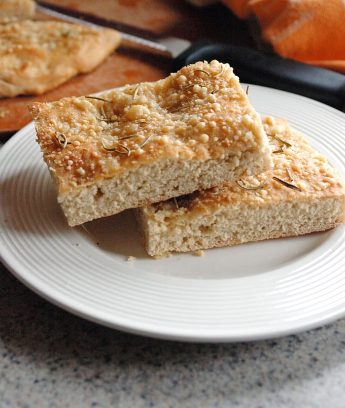

Rosemary Parmesan Foccacia

This recipe was taken from this website here
Ingredients
- 1 ½ cups all-purpose flour (plus extra as needed for the dough to come together; see notes)
- 1 ½ cups white whole wheat flour
- 1 tablespoon instant yeast
- 1 teaspoon garlic powder
- 1 teaspoon salt
- 1 teaspoon sugar
- 1 cup warm milk (low-fat is fine)
- 2 tablespoons olive oil (divided use)
- ¼ cup grated Parmesan cheese
- 1 ¼ teaspoons dried rosemary
- black pepper to taste
Steps
- In the bowl of your stand mixer or a large bowl, add your flour, yeast, garlic powder, salt, and sugar. Whisk to combine.
- Warm up your milk in the microwave and add it to the bowl. Add in 1 tablespoon of olive oil.
- If using a stand mixer with a dough hook, attach the hook and set the speed to 2. Set a timer for four minutes to let the machine mix and knead the dough. (If doing this by hand, stir your ingredients with a spoon and gather the dough into a ball. Knead the dough on a clean, floured surface for at least 6 minutes, or until the dough is smooth and not sticky.)
- Grease your stand mixer bowl (or a clean, large mixing bowl) with cooking spray. Place the dough in the bowl, cover it with a towel, and let the dough rise for 30 minutes in a draft-free spot. (I place mine inside the microwave, which is turned off.)
- When the dough has 10 minutes left to rise, preheat your oven to 425 degrees F and line a rimmed baking sheet with parchment paper or a layer of cornmeal. Grate your Parmesan if using fresh cheese.
- When the dough has risen for 30 minutes, punch down the dough. Transfer the dough to your baking sheet and press the dough into a 10x12 rectangle, trying to keep the thickness even. Use your knuckles to make rows of indentations on the dough's surface.
- Place 1 tablespoon of olive oil in a small bowl and brush the oil onto the dough. Sprinkle on your Parmesan and rosemary.
- Bake the focaccia for 15 minutes, or just until the surface is golden. Do not overbake, or it will be dry. While the focaccia is baking, add your remaining tablespoon of olive oil to your small bowl.
- Remove the focaccia from the oven and set the pan on your stovetop or wire rack. Brush on the remaining tablespoon of olive oil and sprinkle the focaccia with some pepper. To serve, transfer the focaccia to a cutting board and cut into 12 slices.
Back